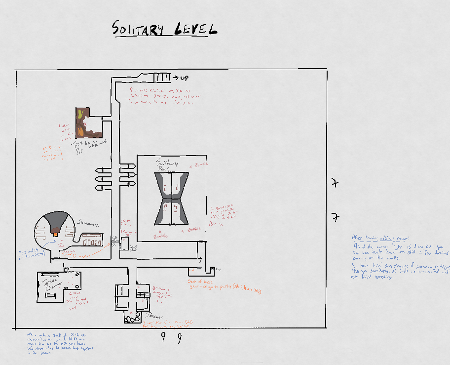
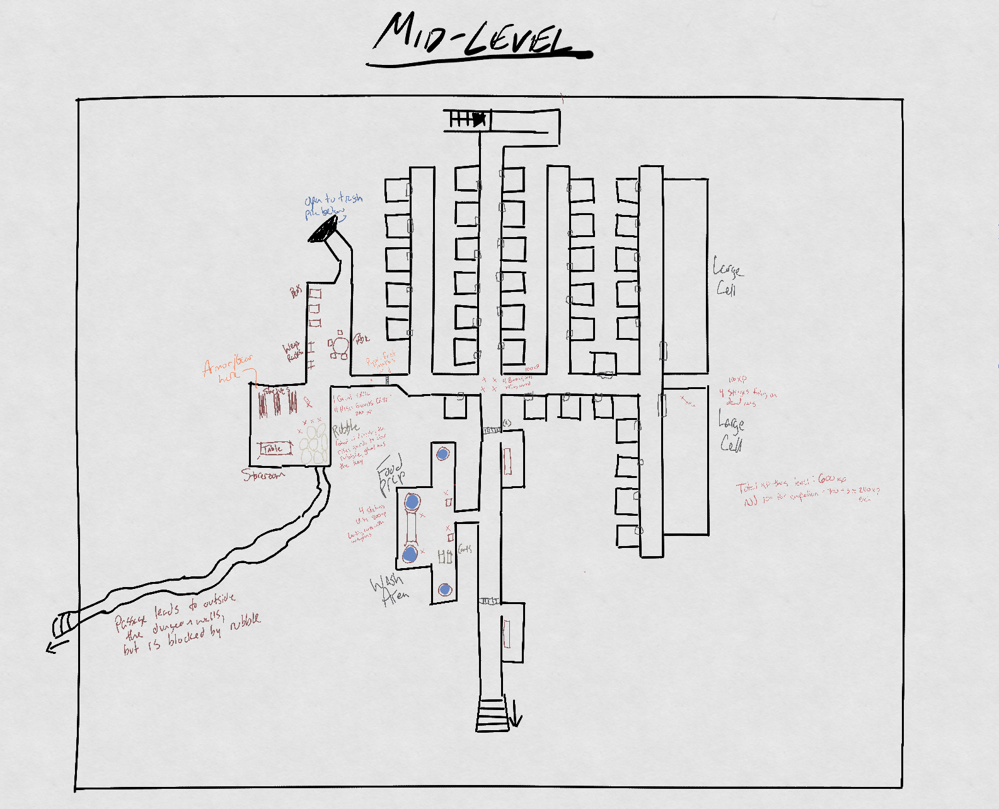

Murfallow Prison
These are the three levels of Murkfallow Prison:
Solitary Level
Prison Cell Level
Keep Level
Level Maps
Bottom Floor - Solitary Level

Middle Floor - Prison Cell Level

Top Floor - Keep Level